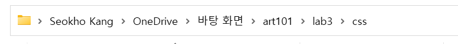
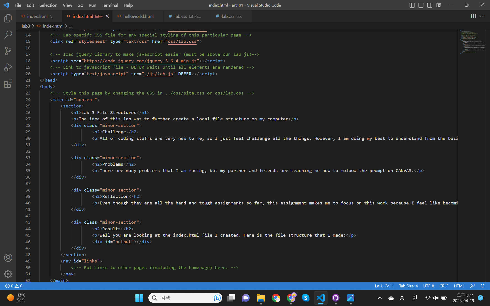
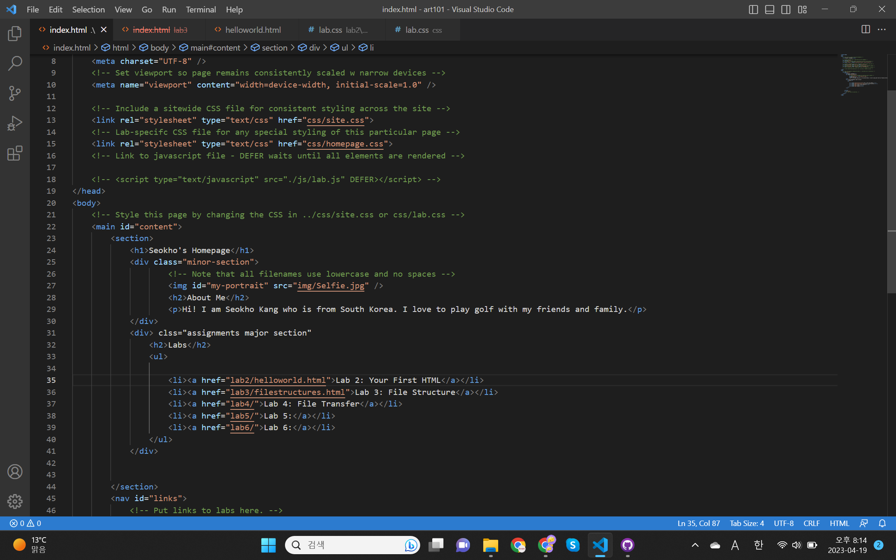
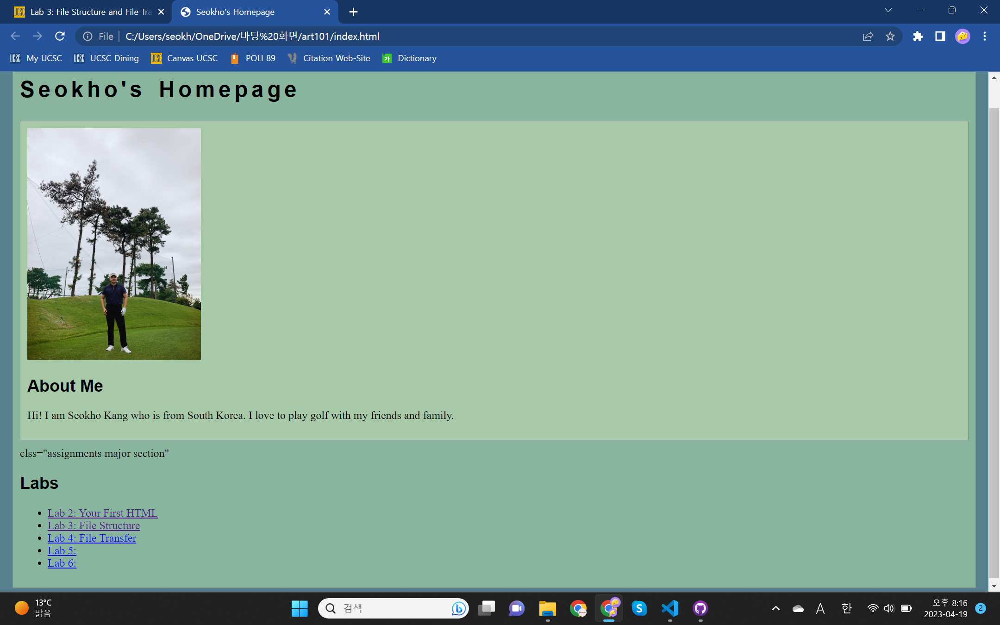

Lab 3 File Structures
The idea of this lab was to further create a local file structure on my computer
Challenge
All of coding stuffs are very new to me, so I just feel challenge all the things. However, I am doing my best to understand from the basic step.
Problems
There are many problems that I am facing, but my partner and friends are teaching me how to foloow the prompt on CANVAS.
Reflection
Even though they are all the hard and tough assignments so far, this assignment makes me to focus on this work because I feel like becoming a programer.
Results
Well you are looking at the index.html file I created. Here is the file structure that I made:
Folder structure
Screenshot of file structure
Screenshot of website sources
Screenshot of homapage